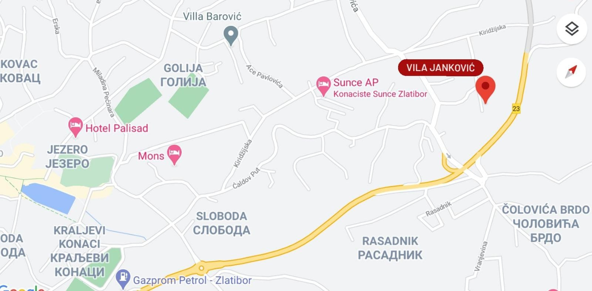

Ko smo mi?
Vila Janković se bavi izdavanjem smeštajnih jedinica već dugi niz godina. Od 2005. uspešno poslujemo sa ljudima širom sveta i do sada smo ugostili preko 30 000 zadovoljnih gostiju. Ovaj smeštaj je 2010. godine dobio treću zvezdicu evropske standardizacije hotelijerstva, a 2017. godine IHG organizacija je naše smeštajne jedinice odlikovala seritfikatom prvog stepena za manje ugostiteljske objekte. Naš kompleks se sastoji od 8 kompletno opremljenih apartmana različite vrste. Pored toga u ponudi imamo kafe bar, gde naši gosti mogu da se opuste uz najfinija pića visokog kvaliteta. Vila Janković je uvek fleksibilna za sve profile gostiju, a ukoliko dolazite sa ljubimcem, naše veliko dvorište i jako uredan prostor za životinje je ono što će vas zaista oduševiti. Očekujemo vas!
Ciljevi
Jedan od naših glavnih ciljeva je zadovoljstvo naših gostiju, jer je ono uvek najbitnije. Cilj nam je da se gosti osećaju udobno i da im boravak u našim apartmanima bude jedan od najboljih odmora do sada. Takođe težimo ka tome da postanemo lider u oblasti manjih smeštajnih objekata na Zlatiboru, a nakon toga i u drugim krajevima Srbije.
Misija i vizija
Misija Vile Janković je plasman ugostiteljskih usluga na visokom nivu u cilju zadovoljenja zahteva i očekivanja naših gositju. Planiramo da nastavimo da primenjujemo i postavljamo najviše standarde, kojima ćemo opravdati i održati ugled koji imamo kod svojih gostiju, kolega, konkurencije i šire zajednice. Ono na šta se naš uspeh oslanja je tradicija, koja je jako dobro očuvana i poštovana u ovom delu Srbije, a uvek smo otvoreni za promene i inovacije, da bi tako postali i ostali što atraktivniji na tržištu, kako gostima tako i partnerima. Pored gostiju odnos koji nam je jako bitan je odnos sa dobavljačima, partnerima i zaposlenima. Uvek se trudimo da svi učesnici u poslovanju imaju koristi i da niko ne zaključi saradnju nezadovoljan. Trudimo se da cenom i kvalitetom ispratimo trendove ugostiteljstva i da svaki gost ode bogatiji za dosta lepih uspomena sa ove planine kao i da se ponovo vrati.
